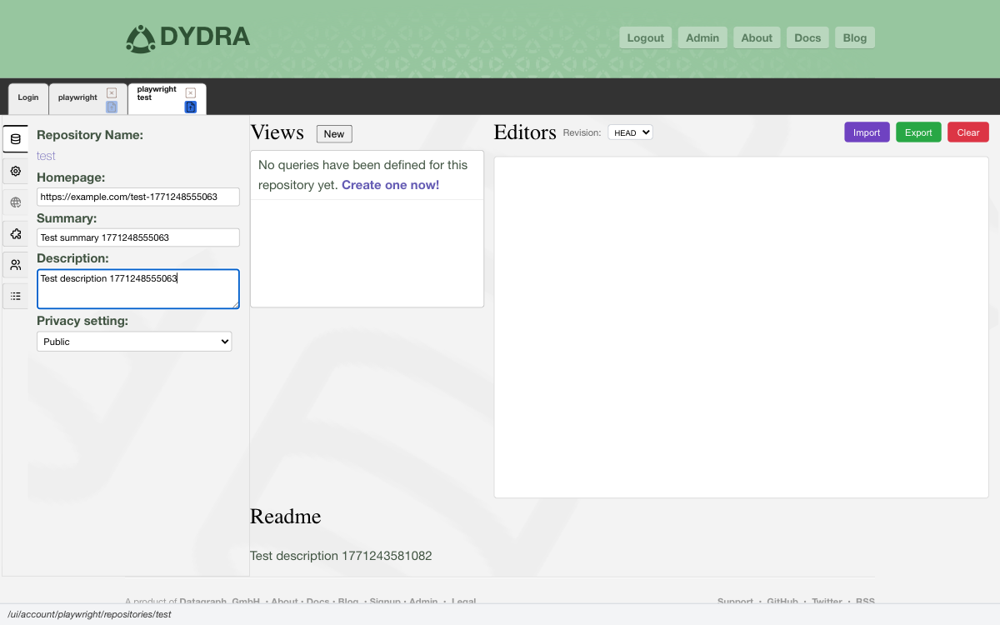
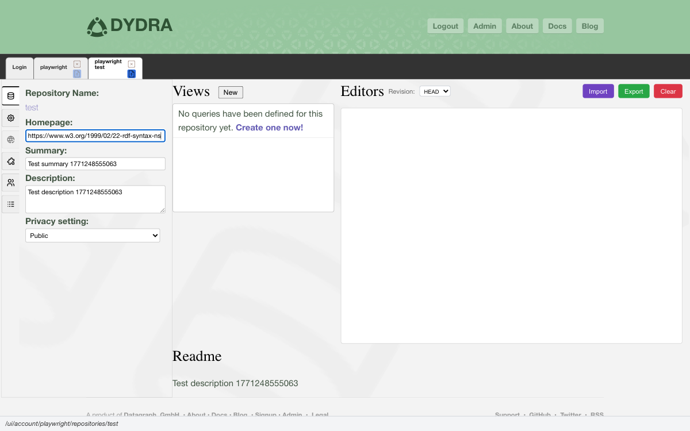
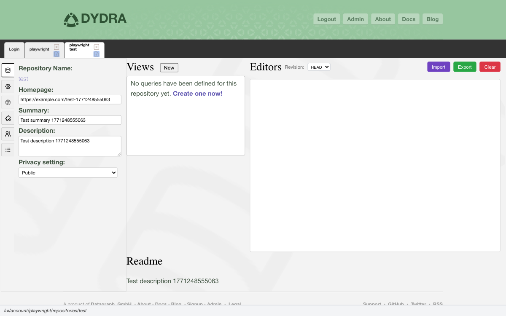

Overview
This chapter tells you how to create a repository, edit its metadata, import and export data, manage collaborators, and delete a repository.
Create a Repository
To create a repository in your account:
- lmdb: Standard LMDB repository (default)
- lmdb-revisioned: Revisioned LMDB repository that supports version history

Figure 1: Repository creation dialog with repository name entered
Read Repository Information
Open a repository and you see:
- Repository name and summary
- Description and abstract
- Homepage URL
- Quad count (number of RDF statements)
- Disk size
- License information
- Import status
- List of views (SPARQL queries)
Edit Repository Metadata
Edit the metadata fields to say what the repository holds.
Fields You Can Edit
| Field | Description |
|---|---|
homepage |
URL to the repository's homepage |
summary |
Brief summary of the repository |
description |
Detailed description of the repository |
abstract |
Abstract or overview of the repository |
privacy_setting |
Privacy setting (e.g., "private", "public") |
permissible_ip_addresses |
The IP addresses that may reach the repository, one per line |
prefixes |
RDF namespace prefixes (one per line) |
How to Edit a Field

Figure 2: Repository metadata field in edit mode with new value entered

Figure 3: Repository page showing the Save button in the tab bar
Import Data
Import RDF data into your repository from a local file or a remote URL.
File Formats You Can Import
Import any of these:
- Turtle (.ttl)
- RDF/XML (.rdf, .xml)
- N-Triples (.nt)
- N-Quads (.nq)
- TriG (.trig)
- JSON-LD (.jsonld, .json)
- CSV (.csv)
Import From a Local File

Figure 4: Dataset import dialog with file selected, ready to import
Import From a URL

Figure 5: Dataset import dialog with URL entered, ready to import
Export Data
Export your repository in any of several RDF formats.
Formats You Can Export
Choose one of these:
- Turtle (.ttl)
- N-Triples (.nt)
- RDF/XML (.rdf)
- JSON-LD (.jsonld)
- TriG (.trig)
- CSV (.csv)
- Graphviz (.gv)
How to Export

Figure 5: Dataset export dialog with export format selected, ready to export
Manage Collaborators
Add other users as collaborators on your repository, and grant each one read or write access.
Add a Collaborator

Figure 6: Collaborator addition form with account name and permission level selected
- Read: the collaborator reads and queries the repository
- Write: the collaborator also changes its data and its views
How to Share Well
Four rules worth keeping:
- Grant the least that works. Give only what the collaborator's role needs.
- Review the list. Go through it from time to time and remove anyone who no longer needs access.
- Share read-only. Grant read when you want someone to see the data but not change it.
- Write down why. Record what each collaborator is working on and why they hold access.
Remove a Collaborator

Figure 7: Collaborator removal confirmation dialog
Change a Collaborator's Permissions

Figure 8: Collaborator permission editing with new permission level selected
Clear a Repository
Clear a repository to remove every triple from it and keep the repository itself.

Figure 9: Repository clear confirmation dialog with warning message
Delete a Repository
Delete a repository to remove it and everything in it, for good.
When Something Goes Wrong
An Import Fails
If an import fails, check that:
- Dydra reads the file's format
- The file holds valid RDF
- Your network reaches the source, for a URL import
- You hold write permission on the repository
- The error message says something more — read it
An Export Fails
If an export gives you trouble, check that:
- The repository holds data
- Another format works
- Your browser allows the download
- You hold read permission on the repository
Next Steps
With your repositories in order, you can:
- Create and execute SPARQL views to query your data
- Import more datasets
- Revise repository settings and metadata
- Read Tips and Best Practices to move faster and diagnose trouble
- Turn to the Appendices for file formats and keyboard shortcuts